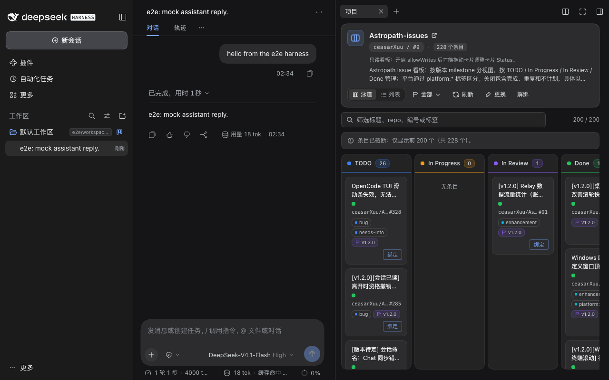
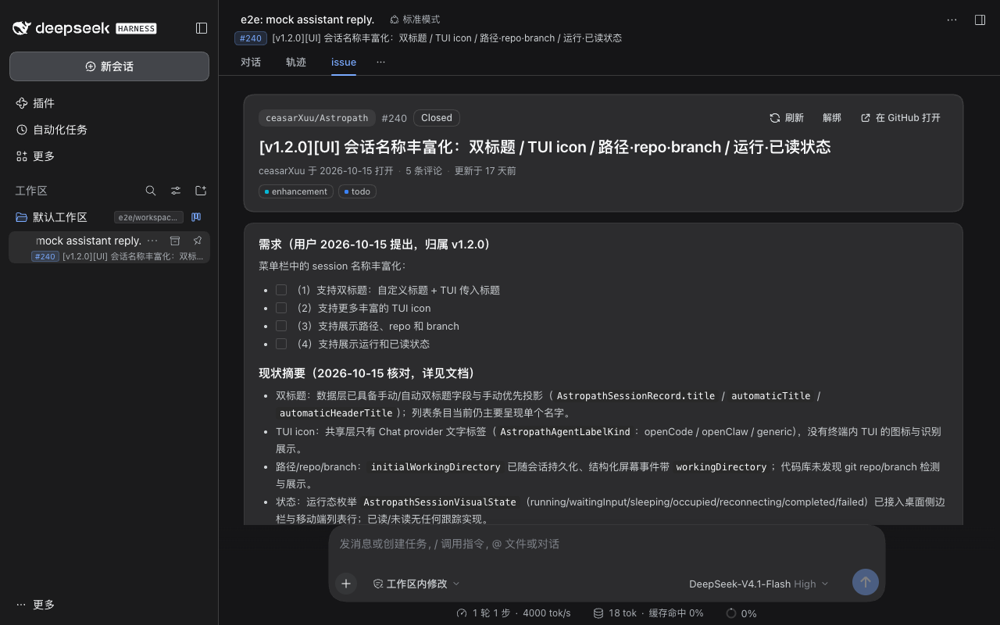

Session cost in the composer
Astropath #240
enhancement
A DeepSeek Harness plugin: your Project's saved views, boards, tables and item details in the right sidebar — every write behind one switch you control.
Read-only
The default. Views, items and details, read through your own gh.
Writes on
allowWrites: true. Fields, issues, comments, new items.
The right sidebar, with a Project's saved views and one item open.
In progress 2
Session cost in the composer
Astropath #240
enhancement
移动到
Workspace branch chip
Astropath #246
enhancement
移动到
In review 1
Auto-bind from origin
Astropath #289
enhancement
移动到
Milestone filter on the board
Narrow a view to one milestone without changing the shared view on GitHub.
ceasarXuu A temporary filter stays local until it is saved.
Write a comment…


One setting decides every write to GitHub. It ships off.
| What it can do | Off | On |
|---|---|---|
| Read views, items and item details | Yes | Yes |
| Move an item across a field | No | Yes |
| Edit a table cell | No | Yes |
| Edit an issue's title, body or state | No | Yes |
| Set assignees, labels or a milestone | No | Yes |
| Post a comment | No | Yes |
| Add an existing item, or create an Issue | No | Yes |
| Archive an item or save a view | No | Yes |
| Store your own GitHub token | Never | Never |
| Delete a Project, or change its permissions | No | No |
With writes off, every write route answers 403 writes-disabled and the
edit affordances are not drawn at all. GitHub enforces its own Project and repository permissions
on top, so a write you are not entitled to make fails with GitHub's reason.
Projects v2 has no field for a repository's default project.
First, the checkout answers locally.
git config --get remote.origin.urlComes back as git@github.com:ceasarXuu/Astropath.git. Local git: no network,
no authentication, no API quota. Every URL shape git accepts is parsed, including
.git suffixes, ports and SSH aliases.
Then one GraphQL read finds the candidates.
Repository.projectsV2 { … }Returns the Projects this repository links. A closed Project is never a candidate, and an enabled Auto-add to project workflow wins the ranking.
Then it only fills a gap.
binding: already set by hand? leave it aloneThe board opens already bound and says where the binding came from, so you can tell guessed from chosen.
The ones that decide whether you install it.
GITHUB_TOKEN or GH_TOKEN, never stores one and
never logs one. Every call goes through the gh you already signed in with, at
loopback. There is no telemetry and no remote image.gh?brew install gh, then gh auth login and
gh auth refresh -s project.maxProjectItems, 200 by default
— and caps comments at maxComments, 30. It does not page, and it says so on
screen rather than pretending.engines.dsh is >=0.2.1-rc.3 <0.3.0, tested on 0.2.1-rc.3. It
draws two subtitles and one icon into the host's sidebar, so a DSH upgrade that renames those
nodes makes them hide — not break.dsh plugin --profile desktop add @ceasarxuu/dsh-github-projectsNeeds an authenticated gh with the project scope, and one restart of
DSH. Then open a workspace that is a git checkout: the board icon is in that workspace's row.
The published npm release, 1.3.0, has the board, the session binding, the subtitles and the branch chip. The panel management on this page is on the repository's main branch, and ships in the next release. The changelog says which is which.